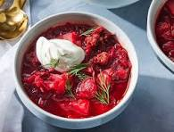

Borscht

Description
Borscht is a sour soup that is traditionally made with
meat stock and boiled vegetables. The Ukrainian version,
which features beets, is perhaps the most well known type
— but varieties of borscht can be found throughout Central
and Eastern Europe and Northern Asia.
Ingredients
- Sausage
- Vegetables
- Canned tomatoes
- Vegetable oil
Steps
- Cook the sausage and set aside.
- Boil water, add the sausage, then add the vegetables and diced tomatoes.
- Cook the onion, stir in the tomato paste, and thin with water. Transfer to the pot.
- Add the garlic, cover, and turn off the heat. Stir in the sugar and seasonings.
- Ladle into bowls and garnish with sour cream and fresh herbs.
Recipe Title